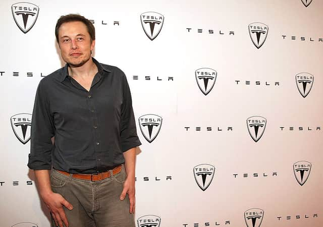

Elon Reeve Musk
Chief Executive Officer of Twitter

Elon Reeve Musk FRS (/ˈiːlɒn/ EE-lon; born June 28, 1971) is a business magnate and investor. He is the founder, CEO and chief engineer of SpaceX; angel investor, CEO and product architect of Tesla, Inc.; owner and CEO of Twitter, Inc.; founder of The Boring Company; co-founder of Neuralink and OpenAI; and president of the philanthropic Musk Foundation. With an estimated net worth of around $196 billion as of February 15, 2023, primarily from his ownership stakes in Tesla and SpaceX, Musk is the second-wealthiest person in the world, according to both the Bloomberg Billionaires Index and Forbes's real-time billionaires list.
Here's a time line of ELON MUSK:
- 1971 - Born in South Africa.He used to read 10 hours per day Musk learned BASIC in 3 days
- 1983 - he created a video game and sold it for 500$.At the age of 14, Elon decided that his life mission is to save humanity
- 1989 - he started college in Ontario
- 1994 - he got Wharton economics and physics degrees.After that he worked two intern jobs and brainstormed ideas He left Stanford PhD after 2 days
- 1995 - Musk starts Zip2 with his brother, coding it himself After sleeping in the office for 3 months, he raised his first investment money (3M), and later sold his share for $22 Million.
- 1999 -he starts X.com - an online bank with his own money
- 2000 -he merges with his rival start-up Confinity to form PayPal Later that same year, he got ousted from PayPal as a CEO (while on honeymoon). Regardless of that, Musk continues to invest money in it
- 2001 - Elon moved to LA to be closer to the space industry and learned how to build rockets from books
- 2002 - after finding out that rockets are overpriced, the ambitious entrepreneur started Space X and got 250M from sale of PayPal
- 2004 - he founded likeminded people and started his venture into electric cars - TESLA
- 2006 - his first rocket was launched and exploded. Moreover, he won a NASA contracts to demo delivery and became the first investor of Solar City - his cousin's company
- 2007 - his second rocket was launched... and exploded again
- 2008 -the first TESLA customers got their Roadsters at $109,000. What is more, another failed attempt at launching a rocket brought both TESLA and Space X to the crisis of running out of money. However, his fourth launch turned successful which won him a NASA contract for 12 flights for $1,6 Billion. In december 2008, hours before going bankrupt, Elon found funding for TESLA.
- 2009 -Musk unveiled the Model S car
- 2010 -TESLA went public at 17$ per share, ending at $24 by the end of the day
- 2011 -In 2011, Elon announced the project for reusable rockets, which would make flights 100 times cheaper. This was also the year in which Musk promised to send humans to Mars by 2031
- 2012 - the shipping for Model S begins while the Model X is unveiled and a supercharger network for the cars was launched
- 2014 - he started building the Gigafacory to mass produce batteries
- 2015 -Musk unveiled Powerwall, first customers got their Model X. However, there was also a failed launch of a rocket (after 19 successful launches) but also a successul landing of the first reusable rocket to reach orbit.
- 2017 -he started the Boring Company to dig tunnels, two new cars were uvailed - TESlA Roadster and and the Semi Electric Truc and first customers got their Model 3.
- 2005 -Elon Musk launched his largest rocket - The Falcon Heavy
What is Elon Musk know for?
Elon Musk co-founded and leads Tesla, SpaceX, Neuralink and The Boring Company. As the co-founder and CEO of Tesla, Elon leads all product design, engineering and global manufacturing of the company's electric vehicles, battery products and solar energy products.His success and personal style have given rise to comparisons to other colorful tycoons from U.S. history, including Steve Jobs, Howard Hughes, and Henry Ford. He was named the richest person in the world with an estimated net worth of $212 billion as of October 2022. Musk first achieved that distinction in 2021, surpassing Amazon.com Inc. (AMZN) founder Jeff Bezos.
How does Elon Musk make money?
Unlike most other billionaires, Elon Musk made the bulk of his wealth through several successful business ventures. Most of the world’s other wealthiest people have relied on one big success, such as Jeff Bezos with Amazon or Mark Zuckerberg with Facebook. After selling Zip2, he went into online banking and payments with controversial businessman and libertarian Peter Thiel. The pair set up what would eventually become payments platform PayPal.
What is Elon Musk’s background?
>Elon Musk was born into a wealthy family in Pretoria, South Africa in 1971. His mother, Maye, is a Canadian dietitian and model, while his father, Errol, is an engineer. While Musk remains close to his mother, his relationship with his father is understood to be strained.A recent interview with Errol Musk, who has two children with his own step-daughter, saw him reveal that he was not proud of his son’s achievements. Musk senior also heaped praise on Elon’s younger brother Kimbal at the apparent expense of the tech entrepreneur.
“Failure is an option here. If things are not failing, you are not innovating enough.”
-- He is one of the people that constantly shape the 21st century